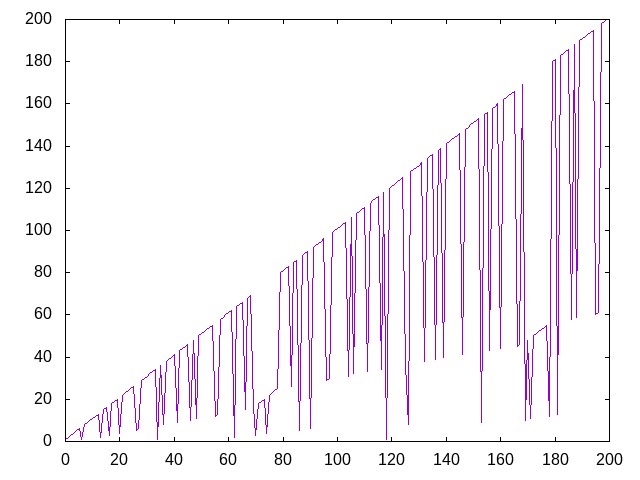

Sucesión de Cantor de números innombrables
Un número es innombrable si es divisible por 7 o alguno de sus dígitos es un 7. Un juego infantil consiste en contar saltándose los números innombrables:
1 2 3 4 5 6 ( ) 8 9 10 11 12 13 ( ) 15 16 ( ) 18 ...
La sucesión de Cantor se obtiene llenando los huecos de la sucesión anterior:
1 2 3 4 5 6 (1) 8 9 10 11 12 13 (2) 15 16 (3) 18 19 20 (4) 22 23 24 25 26 (5) (6) 29 30 31 32 33 34 (1) 36 (8) 38 39 40 41 (9) 43 44 45 46 (10) 48 (11) 50 51 52 53 54 55 (12) (13) 58 59 60 61 62 (2) 64 65 66 (15) 68 69 (16) (3) (18) (19) (20) (4) (22) (23) (24) (25) 80 81 82 83 (26) 85 86 (5) 88 89 90 (6) 92 93 94 95 96 (29) (30) 99 100
Definir las funciones
sucCantor :: [Integer] graficaSucCantor :: Int -> IO ()
tales que
- sucCantor es la lista cuyos elementos son los términos de la sucesión de Cantor. Por ejemplo,
λ> take 100 sucCantor [1,2,3,4,5,6, 1 ,8,9,10,11,12,13, 2, 15,16, 3, 18,19,20, 4, 22,23,24,25,26, 5 , 6 ,29,30,31,32,33,34, 1 ,36 , 8 ,38,39, 40,41, 9 ,43,44,45,46, 10 ,48, 11 ,50,51,52,53,54,55 , 12 , 13, 58,59,60,61,62, 2 ,64,65,66, 15 ,68,69, 16 , 3 , 18, 19, 20, 4, 22, 23, 24 ,25 ,80,81,82,83, 26 ,85,86, 5 ,88,89,90, 6, 92,93,94,95,96, 29, 30 ,99,100] λ> sucCantor2 !! (5+10^6) 544480 λ> sucCantor2 !! (6+10^6) 266086
- (graficaSucCantor n) es la gráfica de los n primeros términos de la sucesión de Cantor. Por ejemplo, (graficaSucCantor 200) dibuja

Soluciones
import Graphics.Gnuplot.Simple -- 1ª solución -- =========== sucCantor1 :: [Integer] sucCantor1 = map fst $ scanl f (1,0) [2..] where f (a,i) x | esInnombrable x = (sucCantor1 !! i, i+1) | otherwise = (x,i) esInnombrable :: Integer -> Bool esInnombrable x = rem x 7 == 0 || '7' `elem` show x -- 2ª solución -- =========== sucCantor2 :: [Integer] sucCantor2 = aux 0 1 where aux i x | esInnombrable x = sucCantor2 !! i : aux (i+1) (x+1) | otherwise = x : aux i (x+1) -- 3ª solución -- =========== sucCantor3 :: [Integer] sucCantor3 = 1 : aux [2..] sucCantor3 where aux [] _ = [] aux (x:xs) a@(y:ys) | esInnombrable x = y : aux xs ys | otherwise = x : aux xs a -- Definición de graficaSucCantor -- ======================================== graficaSucCantor :: Int -> IO () graficaSucCantor n = plotList [ Key Nothing , PNG ("Sucesion_de_Cantor_de_numeros_innombrables.png") ] (take n sucCantor3)